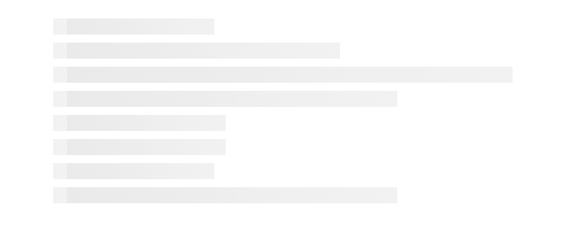

骨架屏研究
这篇文章发布于 2019/10/18，归类于 CSS
标签：
骨架屏
目前骨架屏在app端用的比较多，主要是从国外转过来的。国内大厂JD、知乎、淘宝等都有用，相比原来用loading 菊花图来表示加载中，骨架屏用户体验更好一点，这里我们来自己实现一个简单的骨架屏样式效果

实现的思路是使用background-image线性渐变来做动画效果，下面是一个比较简单的实现：
<head>
<style>
.fast-loading {
height: 20px;
margin: 10px 0;
width: 200px;
background-color: rgb(245, 245, 245);
background-image: repeating-linear-gradient(90deg, #eee, #f5f5f5 100%);
animation-name: fastLoading;
animation-timing-function: linear;
animation-duration: 1s;
animation-iteration-count: infinite;
}
@keyframes fastLoading {
from {
background-position: 0 0;
}
to {
background-position: 100px 0;
}
}
.w100 { width: 100% }
.w80 { width: 80% }
.w60 { width: 60% }
.w40 { width: 50% }
.w30 { width: 30% }
</style>
</head>
<body>
<div style="width: 50%;margin: 50px auto;">
<div class="fast-loading"></div>
<div class="fast-loading w40"></div>
<div class="fast-loading w80"></div>
<div class="fast-loading w60"></div>
<div class="fast-loading w30"></div>
<div class="fast-loading w30"></div>
<div class="fast-loading w50"></div>
<div class="fast-loading w60"></div>
</div>
</body>在线演示色地址: https://zuoxiaobai.github.io/fedemo/src/DebugDemo/简单的骨架屏/index.html
参考